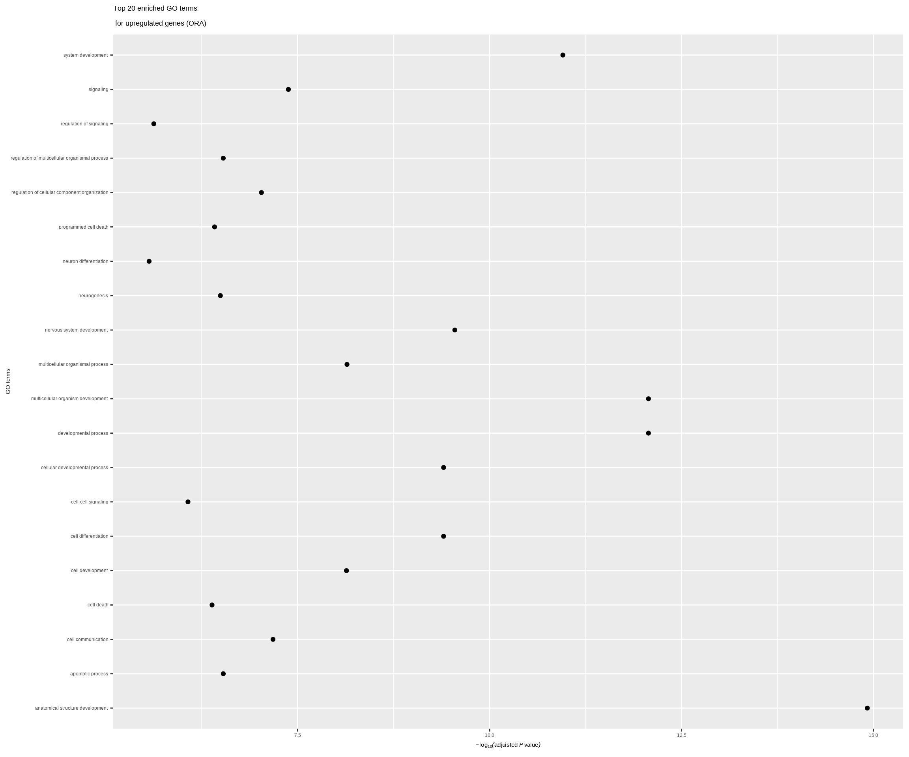
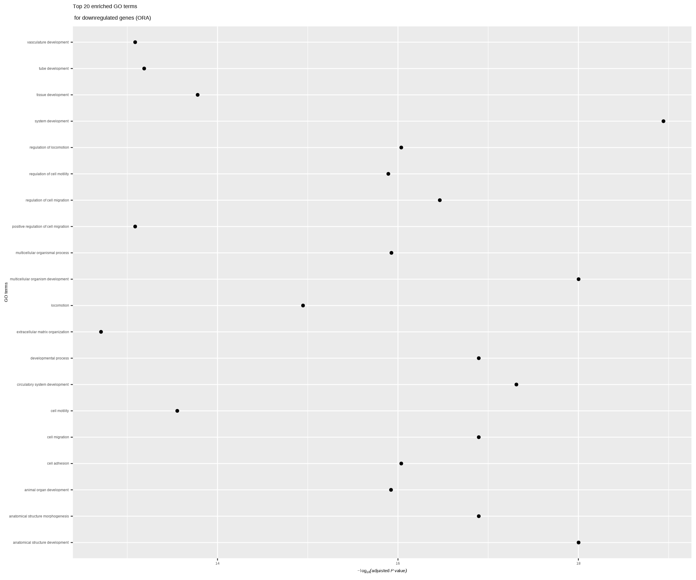
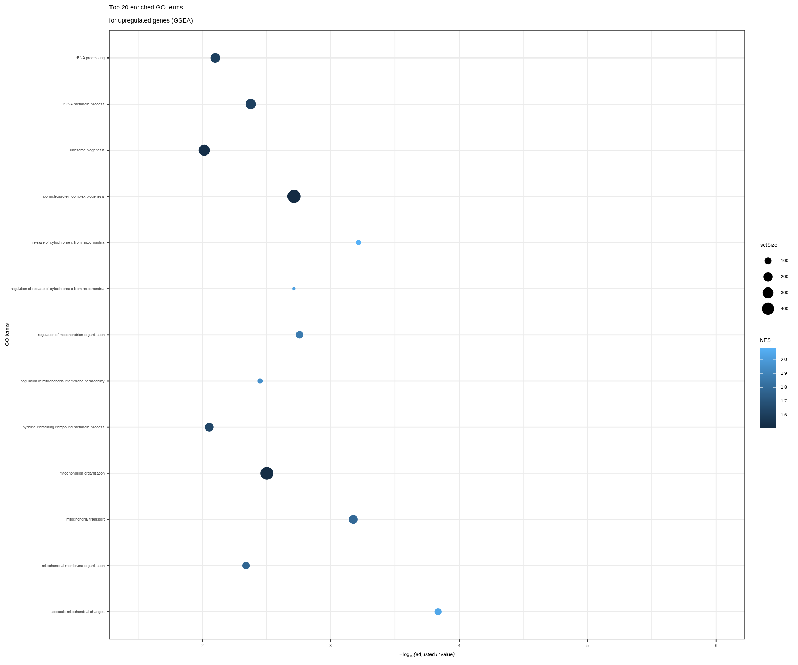
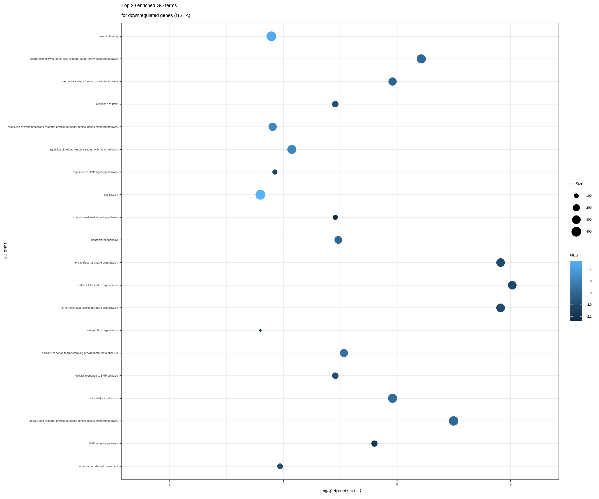

Comparison of ORA and GSEA Workflows for RNA-seq Enrichment Analysis in R
Introduction
During DSFB1 course, I have learned how to perform ORA Gene Enrichment analysis for an RNA-enrichment analysis and applied it on the provided dataset for the final assessment. To further deepen my knowledge of transcriptomics analysis, I want to learn how to perform another type of RNA-seq enrichment analysis, GSEA. In this self-study assignment, I want to:
Learn how enrichment methodology affect the biological interpretation of RNA-seq data and compare the previous ORA results with a new GSEA analysis using the same DESeq2 dataset.
Obtain a more complete picture of the previously used data.
Planning
A total of 32 hours of study time was allocated for this part of the portfolio. The initial planning accounted for only 30 hours, while the remaining 2 hours were spent on scRNA-seq analysis using Seurat in the ‘Reproducible Science’ section of my portfolio.
| Step | Activity | Hours |
|---|---|---|
| 1 | Get familiar with GSEA and review the relevant literature | 2 |
| 2 | Write a background section that compares Over-Representation Analysis and Gene Set Enrichment Analysis, formulate research objective | 4 |
| 3 | Follow the tutorial(s) | 8 |
| 4 | Tidy up the old code and rewrite the research introduction | 8 |
| 5 | Apply pipeline to the new data set | 6 |
| 6 | Debugging, troubleshooting | 2 |
| 7 | scRNA-seq analysis using Seurat | 2 |
| Total | 32 |
I track my time to improve productivity. Attached is a PDF report generated with Toggl Track (the time-tracking application I use), showing the total amount of time I have spent on the DSFB2 course so far, including the time dedicated to the project. Although I did not separate the tracked time by individual tasks, I have spent a total of 78 hours on DSFB2 course.
Difference between GSEA (Gene Set Enrichment Analysis) and ORA (Over-Representation Analysis)
GSEA and ORA are two key pathway analysis approaches for next-gen sequencing data.
ORA uses a threshold-filtered list of significant genes, while GSEA uses all genes ranked by expression change. ORA is ideal for quick, high-magnitude gene lists, whereas GSEA excels at identifying subtle, coordinated changes in entire pathways.
Using these two approaches together is powerful because it offers a more complete and robust interpretation of transcriptomic data(Pluto Bio 2025).
Data description & Research question
The data is obtained from this research:
| GEO.Sample.id | Cell.line | Treatment | Run.id |
|---|---|---|---|
| GSM3393013 | Fibroblast line 1 (CL1500023) | BCLXL | SRR7866699 |
| GSM3393014 | Fibroblast line 1 (CL1500023) | BCLXL | SRR7866700 |
| GSM3393015 | Fibroblast line 1 (CL1500023) | ONECUT1 | SRR7866701 |
| GSM3393016 | Fibroblast line 1 (CL1500023) | ONECUT1 | SRR7866702 |
This study is based on research into fibroblasts derived from human skin and induced pluripotent stem cells (iPSCs) generated from them. Two cell lines were obtained from each of the two subjects. To generate iPSCs, the four transcription factors MYC, OCT3/4, SOX2, and KLF4 were overexpressed.
For each condition, two RNA-seq datasets with paired-end reads were generated. A stranded RNA-seq protocol was used, enabling the identification of plus and minus strands.
As I have already performed an ORA analysis (presented in the section below), the new research question and subquestions are based on a comparison of the results obtained from ORA and GSEA. The main research question is:
- Do ORA and GSEA lead to the same biological interpretation of ONECUT1-induced fibroblast transdifferation?
The subquestions are as follows: - Are GO terms found by ORA and GSEA the same? - Do GSEA find subtler pathways that were missed by ORA?
Libraries
#Load all needed libraries
library(png)
library(grid)
library(gridExtra)
library(tidyverse)
library(DESeq2)
library(org.Hs.eg.db)
library(pheatmap)
library(GOstats)
library(AnnotationDbi)
library(clusterProfiler)
library(enrichplot)
library(pathview)
library(ggrepel)
library(msigdbr)Brief RNA-seq preprocessing summary
Reads were alignwed to hg38 using Rsubread, counts were generated with featureCounts.
Differential expression analysis (DESeq2)
Differential gene expression(DGE) analysis for RNA-seq identifies which genes are significantly up-or-downregulated between biological conditions. In this section, DGE was performed using DESeq2.
# Import count table
count_table<-readRDS(file = "data/read_counts_OC1.rds")
count_table_matrix<-count_table$counts
# Import metadata
metadata_OC1 <- read_csv("data/onecut_sampledata_OC1.csv")
# Convert the metadata to data frame object
metadata_OC1 <- as.data.frame(metadata_OC1)
# Add rownames to the metadata data frame
rownames(metadata_OC1) <- paste0(metadata_OC1$Run, ".bam")
# Show first lines of metadata object
# head(metadata_OC1)
# Check if column names of count table are the same as row names of metadata object
# colnames(count_table_matrix) == rownames(metadata_OC1)
# Make treatment name shorter for the easier generation of the graphs
metadata_OC1 <- metadata_OC1 %>%
mutate(
treatment = str_replace_all(Cell_type, " ", "_"), # replace spaces with underscores
treatment = case_when(
treatment == "Skin_derived_fibroblast_overexpressing_Bclxl" ~ "Bclxl_control",
treatment == "2_days_after_induction_of_OC1_in_skin_derived_fibroblasts" ~ "OC1_treatment",
TRUE ~ treatment
)
)
# Make factors
metadata_OC1$treatment<- factor(
metadata_OC1$treatment,
levels = c("Bclxl_control","OC1_treatment")
)
# Create the DESeqDataSet object
dds <- DESeqDataSetFromMatrix(
countData = count_table_matrix,
colData = metadata_OC1,
design = ~ treatment
)
# Perform the DGE analysis using DESeq2
ipsc_dge <- DESeq(dds)
# Obtain the results for the DGE analysis
ipsc_dge_results <- results(ipsc_dge)
ipsc_dge_results_go <- results(ipsc_dge, alpha = 0.01, lfcThreshold = 1)ORA (Over-Representation Analysis)
In this section, I will perform ORA.
# Create a list of upregulated genes
upregulated_genes <- ipsc_dge_results_go %>% data.frame() %>%
filter(log2FoldChange > 1, padj < 0.01) %>% rownames()
# Create a list of downregulated genes
downregulated_genes <- ipsc_dge_results_go %>% data.frame() %>%
filter(log2FoldChange < -1, padj < 0.01) %>% rownames()
# Create a list of all genes in the dataset
all_genes <- ipsc_dge_results_go %>% data.frame() %>% rownames()
# Perform GO term enrichment analysis for upregulated genes
test_object_upreg <- new("GOHyperGParams",
geneIds = upregulated_genes,
universeGeneIds = all_genes,
annotation = "org.Hs.eg.db",
ontology = "BP",
pvalueCutoff = 1,
testDirection = "over")
goterm_analysis_upreg <- hyperGTest(test_object_upreg)
goterm_analysis_upreg## Gene to GO BP test for over-representation
## 6995 GO BP ids tested (6994 have p < 1)
## Selected gene set size: 832
## Gene universe size: 18434
## Annotation package: org.Hs.eggoterm_analysis_upreg_results <- summary(goterm_analysis_upreg)
# Perform GO term enrichment analysis for downregulated genes
test_object_downreg <- new("GOHyperGParams",
geneIds = downregulated_genes,
universeGeneIds = all_genes,
annotation = "org.Hs.eg.db",
ontology = "BP",
pvalueCutoff = 1,
testDirection = "over")
goterm_analysis_downreg <- hyperGTest(test_object_downreg)
goterm_analysis_downreg## Gene to GO BP test for over-representation
## 5379 GO BP ids tested (5378 have p < 1)
## Selected gene set size: 359
## Gene universe size: 18434
## Annotation package: org.Hs.eggoterm_analysis_downreg_results <- summary(goterm_analysis_downreg)
#Adjust p values for multiple testing
goterm_analysis_upreg_results$padj <- p.adjust(goterm_analysis_upreg_results$Pvalue, method = "BH")
goterm_analysis_downreg_results$padj <- p.adjust(goterm_analysis_downreg_results$Pvalue, method = "BH")
# Select only gene sets that are larger than 5 but smaller
# than 500 (to prevent taking along very small and very large
# gene sets).
goterm_analysis_upreg_results <- goterm_analysis_upreg_results %>% filter(Count > 5) %>% filter(Count < 500)
goterm_analysis_downreg_results <- goterm_analysis_downreg_results %>% filter(Count > 5) %>% filter(Count < 500)
#Select the top 20 GO terms
goterm_analysis_upreg_top20 <- goterm_analysis_upreg_results[order(goterm_analysis_upreg_results$padj)[1:20],]
goterm_analysis_downreg_top20 <- goterm_analysis_downreg_results[order(goterm_analysis_downreg_results$padj)[1:20],]Here, I will plot the graphs.
#Plot the p-values of the top 20 GO terms (upregulated)
p1 <- goterm_analysis_upreg_top20 %>% ggplot(aes(x = Term, y =-log10(padj))) +
geom_point() +
coord_flip() +
ylab(expression(-log[10](adjuisted ~italic(P)~value))) +
xlab("GO terms") +
ggtitle("Top 20 enriched GO terms\n for upregulated genes (ORA)")
p1
#Plot the p-values of the top 20 GO terms (downregulated)
p2 <- goterm_analysis_downreg_top20 %>% ggplot(aes(x = Term, y =-log10(padj))) +
geom_point() +
coord_flip() +
ylab(expression(-log[10](adjuisted ~italic(P)~value))) +
xlab("GO terms") +
ggtitle("Top 20 enriched GO terms\n for downregulated genes (ORA)")
p2
According to the ORA enrichment analysis, neuronal processes are strongly upregulated, including neural development, neurogenesis, and neuronal differentiation. In addition, signaling pathways related to cell–cell communication and synaptic function, apoptotic processes are also enriched among the upregulated genes. The GO term enrichment analysis of downregulated genes primarily indicates suppression of vascular processes, such as circulatory system development and blood vessel morphogenesis, together with reduced cell motility and proliferation.
GSEA (Gene Set Enrichment Analysis)
In this section, I will perform GSEA.
# Prepare DESeq2 results for GSEA
dge_df <- as.data.frame(ipsc_dge_results) %>%
rownames_to_column("ENTREZID") %>%
filter(!is.na(stat))
# Create ranked gene list
gene_list <- dge_df$stat
names(gene_list) <- dge_df$ENTREZID
# Remove duplicated IDs and sort
gene_list <- gene_list[!duplicated(names(gene_list))]
gene_list <- sort(gene_list, decreasing = TRUE)
# Run GSEA
gsea_go <- gseGO(
geneList = gene_list,
OrgDb = org.Hs.eg.db,
keyType = "ENTREZID",
ont = "BP",
minGSSize = 6,
maxGSSize = 500,
pvalueCutoff = 1,
pAdjustMethod = "BH",
eps = 0,
seed = TRUE,
by = "fgsea"
)## Warning in preparePathwaysAndStats(pathways, stats, minSize, maxSize, gseaParam, : There are ties in the preranked stats (19.69% of the list).
## The order of those tied genes will be arbitrary, which may produce unexpected results.# Results
gsea_results <- as.data.frame(gsea_go)
# Significant GSEA results
gsea_results_sig <- gsea_results %>%
filter(p.adjust < 0.01)
# Upregulated pathways: positive NES
gsea_top_up <- gsea_results_sig %>%
filter(NES > 0) %>%
arrange(p.adjust) %>%
slice_head(n = 20)
# Downregulated pathways: negative NES
gsea_top_down <- gsea_results_sig %>%
filter(NES < 0) %>%
arrange(p.adjust) %>%
slice_head(n = 20) I attempted to perform GSEA using the same parameters as in the ORA analysis. In the section below, I will present the results.
# Plot the p-values of the top 20 upregulated GO terms from GSEA
p3 <- gsea_top_up %>%
ggplot(aes(x = Description,
y = -log10(p.adjust))) +
geom_point(aes(size = setSize,
color = NES)) +
coord_flip() +
scale_y_continuous(limits = c(1.5, 6)) +
theme_bw() +
ylab(expression(-log[10](adjusted~italic(P)~value))) +
xlab("GO terms") +
ggtitle("Top 20 enriched GO terms\nfor upregulated genes (GSEA)") +
theme(
axis.text.y = element_text(size = 8),
axis.text.x = element_text(size = 10)
)
p3
# Plot the p-values of the top 20 downregulated GO terms from GSEA
p4 <- gsea_top_down %>%
ggplot(aes(x = Description,
y = -log10(p.adjust))) +
geom_point(aes(size = setSize,
color = NES)) +
coord_flip() +
scale_y_continuous(limits = c(1.5, 8.5)) +
theme_bw() +
ylab(expression(-log[10](adjusted~italic(P)~value))) +
xlab("GO terms") +
ggtitle("Top 20 enriched GO terms\nfor downregulated genes (GSEA)") +
theme(
axis.text.y = element_text(size = 8),
axis.text.x = element_text(size = 10)
)
p4
The GSEA analysis revealed suppression of wound healing, heart morphogenesis, TGF-β/BMP signaling, and cell adhesion. In contrast, RNA processing, ribosome biogenesis, and mitochondrial organization were positively enriched.
ORA and GSEA
The results of GSEA and ORA differed, although some overlapping patterns were observed, such as suppression of vascular processes and adhesion, as well as upregulation of apoptotic processes. In addition, GSEA revealed positive enrichment of RNA processing and mitochondrial organization pathways.
Together, these findings support a shift in cellular identity, in which the cells transition toward a more neuronal phenotype accompanied by metabolic and transcriptional remodeling. Therefore, ONECUT1-induced fibroblast transdifferentiation likely occurred successfully. In addition, more subtle pathways, such as suppression of ossification, were also identified.